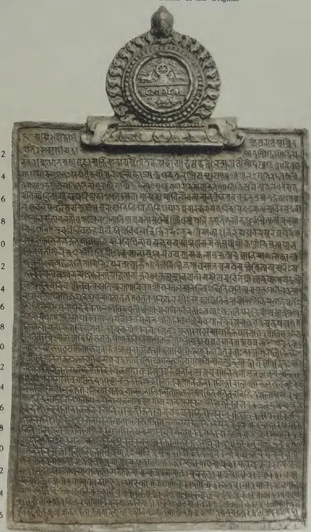
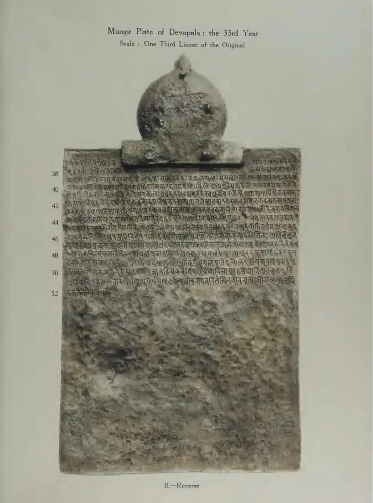

No. 30.—THE MUNGIR PLATE OF DEVAPALADEVA : SAMVAT 33.
This charter was first published in the year 1788, in Vol. I of the Asiatick Researches, p. 123 ff. where a lithographic reproduction and an attempt at translation were presented. About that time the plate disappeared. In 1892 the late Professor Kielhorn republished the text with a corrected translation in the Indian Antiquary, Vol. XXI, p. 254 ff., on the basis of the edition in the Asiatick Researches; as will be seen, he accomplished the task with his wonted skill and success. But no trace of the original plate could be found.
Recently, while repairs were being made in Kenwood House, a dirty and discoloured metal plate inscribed with Indian characters was found hidden away between a beam and the roof. It was brought to me for identification, and I at once recognised it as the long-lost charter of Dēvapāladēva. Then Mr. Plenderleith, of the Science Laboratory attached to the British Museum, came to my aid and skilfully removed the accumulated grime and rust of many generations, so that it is now restored to its original condition, a fine and almost perfectly preserved specimen of medieval Indian metal-work. It seemed desirable to publish a photographie facsimile with an emended transcription of the text, and I have been permitted to do this by the kindness of the Right Honourable the Earl of Iveagh, G.C.V.O., Senior Trustee of the Kenwood Estate.
The plate is of thick copper, measuring 18 inches in height and 13 inches in width. On the top of it is soldered a seal, 6 inches high and at the base 7 inches wide; in the central panel of this is the well-known Sārnāth device, the dharma-chakra with two antelopes at the sides, under which is the royal name, Śrī-Dēvapāladēvasya. It is in excellent preservation: with the exception of a very few unimportant syllables, the characters are as cleanly cut as when the plate came from the engraver's hand. The script is typical of the region and date; the letters are about of an inch in height. It is needless to treat of the contents, as they are fully discussed in Kielhorn's paper.
The main part of this document, scil. from the beginning to kārya iti, l. 46, is duplicated in ll. 1-42 of the Nālandā plate published in Ep. Ind., Vol. XVII, p. 310 ff. The divergences are few and slight, and I have only noticed the more important.
TEXT.1
First Side.
- 1 Öñ2 svasti | Siddhārthasya par-ārtha-susthira3.
- 2 matēħ san-mārgam=abhyasyatas=siddhis=siddbim=a.
- 3 nuttarām=bhagavatas=tasya prajāsu kriyāt | yas=traidhātuka-sat[t*]va-siddhi-padavīr=atyugra-vīry-ōdayāj=jitvā nirvṛiti-
- 4 m=āsasāda sugataħ san=sarvva-bhūm-īsvaraħ4 || [1*] Saubhāgyan=dadhad=atulam śriyas=sapatnyā Gōpālaħ patir=abhavad=vasu-
- 5 ndharāyāħ | dṛisht-āntē sati kṛitinām surājñi yasmin=śraddhēyāħ Pṛithu-Sagar-ādayō-py=abhūvan || [2*] Vijitya yēn=ā jaladhēr=vasundha-
- 6 rām vimōchitā mōgha-parigrahā iti | sa-vāshpam=udvāshpa-vilōchanān=punar=vvanēshu va(ba)ndhūn=dadṛishu(śu)r=mmataṅga-jāħ || [3*] Cha-
- 7 latsv=anantēshu va(ba)lēshu yasya viśvambharāyā nichitam rajōbhih | pāda-prachāra-kshamam=antariksham=vihaṅgamānām suchiram=va(ba)bhūva || [4*]
Mungir Plate of Devapala : the 33rd Year
Scale : One Third Linear of the Original

8 Šāstr-ārtha-bhājā chalatō=nuśāsya varṇṇān=pratishthāpayatā sva-dharmm | śrī-Dharmmapālēna sutēna sō=bhūt=svarga-sthitānām=anrīṇaḥ
9 pitrīṇām || [5*] Achalair=iva jaṅgamair=yadīyair=vichaladbhir=dviradaiḥ kadar-thyamānā | nirupaplavam=amva(mba)ram prapēdē śa-
10 raṇam rēṇu-nibhēna bhūta-dhātrī || [6*] Kēdārē vidhin=ōpayukta-payasām Gaṅgā-samēt-āmvu(mbu)dhau Gōkarṇṇ-ādishu ch=āpy=anu-
11 * shthitavatām tīrthēshu dharmmyāḥ kriyāḥ | bhrityānām sukham=ēva yasya sakalān=uddh[rī*]tya dushṭān=imān lōkān=sā-
12 dhayatō'nushaṅga1-janitā siddhiḥ paratr=āpy=abhūt || [7*] Tais=tair=dig-vijay-āvasāna-samayē samprēshitānām=paraih sa-
13 tkārair=apanīya khēdam=akhilam svām svāṇ=gatānām bhuvam | krītyam=bhāvaya-tām yadīyam=uchitam prītyā nrīpāṇām=abhūt=s-ō-
14 tkaṇṭham hṛidayam divaś=chyutavatām jāti-smarāṇām=iva || [8*] Šrī-Parava(ba)-lasya duhituḥ kshiti-patinā Rāshṭrakūṭa-tilakasya |
15 Raṇṇādēvyāḥ pāṇir=jagṛihē gṛiha-mēdhinā tēna || [9*] Dhṛita-tanur=iyam Lakshmīḥ sākshāt=kshitir=nu śarīriṇī kim=avani-patēḥ
16 kīrttir=mūrttā'thavā1 gṛiha-dēvatā [*] iti vidadhatī śuchy-āchārā vitarkavatīḥ prajāḥ prakṛiti-gurubhir=yā śuddh-āntam guṇai-
17 r=akarōd=adhaḥ || [10*] Šlāghyā pativrat=āsau muktā-ratnam samudra-śuktir=iva śrī-Dēvapāladēvam prasanna-vṛittam2 sutam=asūta || [11*]
18 Nirmmalō manasi vāchi saṅyataḥ kāya-karmmaṇi cha yaḥ sthitaḥ śuchau rājyam=āpa nirupaplavam pitur=vō(bō)dhi-sat[t*]va iva
19 saugatam padam || [12*] Bhrāmyadbhir=vijaya-kramēṇa karibhis=tām=ēva Vindhy-āṭavīm=uddāma-plavamāna-vāshpa-payasō dṛi[shṭāḥ] punar=vā(bā)ndha-
20 vāḥ | [l] Kamvō(mbō)jēshu cha yasya vāji-yuvabhir=dhvast-ānya-rāj-aujasō hēshā-miśrita-hāri-hēshita-ravāḥ kāntāś=chiram vīkshitāḥ3 || [13*]
21 Yaḥ pūrvvam=Va(Ba)linā kṛitaḥ kṛita-yuzē yēn=āgamad=Bhārgavas=trētāyām praha-taḥ priya-praṇayinā Karṇṇēna yō dvāparē | vichchhinnaḥ kali-
22 nā Šaka-dvishi gatē kālēna lōk-āntaram yēna tyāga-pathaḥ sa ēva hi punar=vispashṭam=unmīlitaḥ || [14*] A(Ā) Gaṅg-āgama-mahitā-
23 t-sapatna-śūnyām=ā Sētu-prathita-Daśāsya-kētu-kīrttēḥ | urvīm=ā Varuṇa-nikē[ta*]nāch-cha sindhōr=ā Lakshmī-kula-bhavanāch=cha yō
24 vu(bu)bhōja || [15*] Sa khalu Bhāgīrathī-patha-pravarttamāna-nānāvidha-nau-vāṭaka-sampādita-sētu-va(ba)ndha-nihita-śaila-śikhara-śrē-
25 ṇī-vibhramān=niratiśaya-ghana-ghanāghana-ghatā - śyāmāyamāna - vāsara - Lakshmī-samā-ravdha(bdha)-santata-jalada-samaya-sa-
26 ndēhāt | udīchīn-ānēka-nara-pati-prābhṛitīkṛit-āpramēya-haya-vāhinī-khara-khur-ōtkhāta-dhūlī-dhūsarita-di-
27 g-antarālāt | paramēśvara-sēvā-samāyāt-āśēsha-Jamvū(mbū)dvīpa-bhūpāla-pādāta-bhara-namad-avanēḥ | śrī-Mudgagiri-samāvā-
1 The elision of a is denoted by an avagraha.
2 Kielhorn read prasanna-vaktram, and this is supported by the Nälandä plate, l. 16. But our plate has distinctly -vṛittam.
3 Our plate has clearly vīkshitāḥ, as was read by Kielhorn ; the Nälandä plate however has chira-prīṇitāḥ, l. 19).
98 sita-śrīmaj-jaya-skandhāvārāt parama-saugata-paramēśvara-parama-bhatṭāraka-mahārāj-ādhirāja-śrī-Dharmapāladēva.
29 pād-ānudhyātaḥ parama-saugataḥ paramēśvara-parama-bhatṭārakō mahārāj-ādhirājaḥ śrīmān-Dēvapāladēvaḥ kuśalī |
30 Śrīnagara-bhuktau Krimilā-vishay-āntaḥpāti-sva-samva(mba)ddh-āvichchhīnna-tal-ōpēta-Mēshikā-grāmē samupagatā-
31 na(n) sarvvān=ēva rāṇaka- | rāja-putra- | amātya- | mahākārttākṛitika- | mahā-daṇḍanāyaka- | mahā-pratīhāra- | mahā-sā-
32 manta- | mahādauḥsādhasādhanika- | mahā-kumār-āmātya- | pramātṛi- | sarabhaṅga- | rājasthānīya- | uparika- | dāśā-
33 parādhika- | chaurōddharaṇika- | dāṇdika- | dāṇḍapāśika- | śaulkika- | gaulmika- | ksha-(kshē)trapa- | prāntapāla- | kōṭṭapāla- |
34 khaṇḍaraksha- | tad-āyuktaka- | viniyuktaka- | hasty-aśv-ōshṭra-va(ba)la-vyāpṛitaka- [[*]] kiśōra-vaḍavā-gō-mahishy-aj-āvik-ādhyaksha- | dūta-praishaṇi-
35 ka- | gamāgamīka- | abhitvaramāṇa- | vishaya-pati- | tara-pati- | tarika- | Gauḍa-Mālava-Khaśa-Hūṇa-Kulika-Karṇṇāṭa-Lā[ṭa]-chāṭa-bhaṭa-
36 sēvak-ādīna(n) anyāmś=ch=ākīrttitān sva-pāda-padm-ōpajīvinaḥ prativāsinaś=cha vrā-(brā)hmaṇ-ōttarān mahattara-kuṭumvi(mbi)-purōga-mēd-ā
Second Side.
37 1ndhraka-Chaṇḍāla-paryantān samājñ(ā)payati Viditam=a-
38 stu bhavatāṇ yath=ōparilikhita-Mēshikā-grāmaḥ sva-sī-
39 mā-tṛiṇa-yūti-gōchara-paryantaḥ sa-talaḥ s-ōddēśaḥ s-āmra-madhūkaḥ sa-jala-sthalaḥ sa-matsyaḥ sa-tṛiṇaḥ s-ōparikaraḥ sa-daś-ā-
40 parādhaḥ sa-chaurōddharaṇaḥ parihṛita-sarvva-pīḍaḥ | a-chāṭa-bhaṭa-pravēśō'kiñchit²-pragrāhyō rājakulīya-³pratyāya-samē-
41 tō bhūmi-chchhidra-nyāyēn=ā-chandr-[ārkka]-kshiti-sama-kālaḥ4 pūrvva-datta-bhukta-bhujyamāna-dēva-vra(bra)hma-dēya-varjjitō mayā mātā-pitrōr=ātmanaś=cha pu-
42 ṇya-yaśō-bhivṛiddhayē vēd-ā[rtha]-vidō yajvanō Bhatṭa-Viśvarātasya pautrāya vidy-āvadāta-chētasō Bhatṭa-śrī-Varāharātasya putrāya |
43 pada-vākya-pramāṇa-vidyā-pāraṇ-gatāya | Aupamanyava-sa-grō(gō)trāya | Āślāyana⁵-sa-vra(bra)hmachāriṇē | Bhatṭa-[pravara⁶]-Vihēkarāta-miśrāya
44 śāsanīkṛitya pratipāditaḥ [[*]] Yatō bhavadbhiḥ sarvvair=ēva bhūmēr=dāna-phala-gauravād=apaharaṇē mahā-naraka-pāta-bhayāch=cha dānam=i-
45 dam=anumōdya pā[la]nīyaṇ prativāsibhiiḥ kshētrakaraiś=ch=ājñā-śravaṇa-vidhēyair=bhūtvā samuchita-kara-hiraṇy-ādēy-ādi-sarvva-pratyāy-ōpana-
46 yaḥ ka(ā)rya iti | [Sa]mvat 33 Mārga-dinē 21 | Tathā cha dharm-ānuśāśa(sa)na-ślōkāḥ | Sarvān=ētān bhāvinaḥ pārthivēndrān
1 [The symbol seems to read nāra.—Ed.]
2 The elided a is denoted by an avagraha.
3 [Like the Nālandā plate, this charter clearly gives samasta before pratyāya. Kielhorn was doubtful about the reading of this word. See Ind. Ani., Vol. XXI, p. 256, f. n. 34.—Ed.]
4 [I think the text reads kālam̄ as it does in the Nālandā plate, l. 36, cf. other nasal symbols for instance in lf. 38 and 51.—Ed.]
5 Read Āśvalāyana.
6 So read in previous editions: the letters are no longer legible.

47 bhūyō bhūyaḥ prārthayaty=ēsha Rāmaḥ [*] sāmānyō=yam dharma-sētur=
nṛipāṇām(m) kālē kālē pālanīyaḥ kramēṇaḥ1 || [16*] Va(Ba)hubhir=vasudhā
48 dattā rājabhih Sagar-ādibhih [*] yasyayasya' yadā bhūmiḥ(s=)tasyatasya tadā
phalam || [17*] Sva-dattām=para-dattām=vā yō harēta vasu-
49 ndharān(m)² [*] sa vishṭhāyā[m*] kṛimir=bhūtvā pitṛibhis=saha ³pachyat[ē] [|| 18*]
Iti kamala-dal-āmvu(mbu)-vindu-lōlan(lām)² śrī(śrī)yam=anuchintyaā manushyā-
50 jīvitaṇ=cha | sakalam=idam=udāhṛitaṇ=cha vu(bu)ddh[v*]ā na hi purushaih para-
kṛrttayō vilōpyā[h*] || [19*] Śrēyō-vidhāv=ubhayaṇśa-⁴vi-
51 śuddhi-lbājam rāj=ātka(ka)rōd=adhigat-ātma-guṇam guṇa-jñaḥ | ātm-ānurūpa-chari-tam
sthira-yauvarājyam śrī-Rājyapālam=i-
52 ha dūtakam=ātma-putram || [20*]